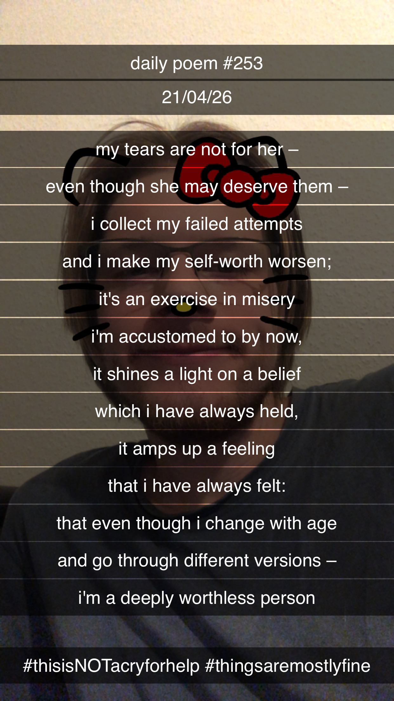

My Tears Are Not For Her
[253]My tears are not for her –
Even though she may deserve them;
I collect my failed attempts
And I make my self-worth worsen –
It's an exercise in misery
I'm accustomed to by now –
It shines a light on a belief
Which I have always held,
It amps up a feeling
That I have always felt –
That even though I change with age
And go through different versions –
I'm a deeply worthless person.
